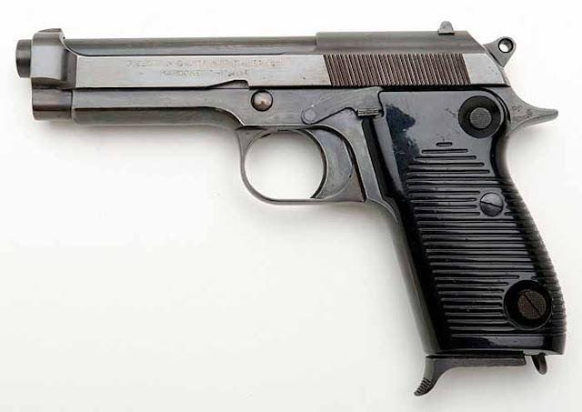

beretta
მე .22LR კალიბრის პისტოლეტების კვალდაკვალ
უკვე წლებია ჩემი დაკვირვების ობიექტს წარმოადგენს .22LR ვაზნაზე გათვლილი ის თვითდამტენი პისტოლეტები, რომელიც ამ ხნის მანძილზე თბილისის მაღაზიებში იყო წარმოდგენილი და ხელმისაწვდომი. მე არაერთხელ მივსულვარ სხვადასხვა მაღაზიებში, კონკრეტულად .22LR ვაზნაზე გათვლილი პისტოლეტების დასათვალიერებლად და შესარჩევად, მაგრამ ვერცერთხელ ვერ მივიღე გადაწყვეტილება თუ რომელი პისტოლეტი დაიდებდა ბინას ჩემს ოჯახში. (იგივე შეიძლება ვთქვა .22LR ვაზნაზე გათვლილ შაშხანებზე, რომლის შეძენაც საერთოდ გადავიფიქრე იმ მიზეზით, რომ არ მიზიდავს პლინკინგისთვის შექმნილი იაფი მოდელები). შეიძლება ითქვას 2007 წლიდან - 2016 წლამდე მე ვეძებდი .22LR კალიბრის თვითდამტენ პისტოლეტს და (პატრულს დავესეხები გამონათვაქმს) „ვატარებდი შემოვლას ჩემს კვადრატში“ კი არა და მაღაზიებში იმ მიზნით, რომ შევარჩევდი პისტოლეტს.
რატომ ვერ ვიღებდი გადაწყვეტლებას? ამ კითხვაზე ვრცლად მინდა ვისაუბრო და გამოვყო ის კრიტერიუმები (მოთხოვნები), რომელთა გათვალისწინებითაც მე წლებია ვარჩევდი მცირეკალიბრიან პისტოლეტს. აქვე ავღნიშნავ, რომ ეს კრიტერიუმები არ გეგონოთ რაიმე დოგმა და არ იფიქროთ, რომ თქვენც ამ კრიტერიუმებით გირჩევთ იხლმძღვანელოთ. პირიქით ეს ყველაფერი ერთგვარი „ახირებაა“, რომელიც მე მახასიათებს / მახასიათებდა .22LR კალიბრის პისტოლეტის შერჩევისას.
ახირება „აუცილებლად ძველი სკოლა“ (“Old school”)
უნდა ავღნიშნო, რომ მე ძველი თაობის (ე.წ. “Old school”) იარაღი ყველაზე მეტად მხიბლავს და მცირეკალიბრიანი პისტოლეტის შერჩევისასაც, პირველ რიგში ვცდილობდი სწორედ ასეთ ეგზემპლარებზე გამემახვილებინა ყურადღება. “Colt Woodsman” -ის და “High Standard Model H-D” –ის შოვნის იმედია არ მქონია, მაგრამ ოცნებით რამდენიც გინდა. ახლაც ვოცნებობ ამ მცირეკალიბრიანებზე. დიდხნიანი ფიქრის შემდეგ ჩამოვყალიბდი და გავაცნობიერე, რომ ყველაზე მეტად მაღაზიებში წარმოდგენილი ეგზემპლარებიდან მესიმპატიურებოდა .22LR ვაზნაზე გათვლილი “Walther PPK”, რომელიც ერთერთ მაღაზიაში იყიდებოდა, თუმცა მისი ფასი შეადგენდა 1000 ლარს. იმ პერიოდში 1000 ლარი დიდი ფული იყო და ზედმეტად მეძვირა ვალტერის ეს მოდელი. აქედან გამომდინარე სერიოზულად არ მიფიაქრია მის შეძენაზე. გარდა ამისა „Walther PPK”-ზე თავის შეკავების ერთერთ მიზეზს წარმოადგენდა ის ფაქტიც, რომ ეს ეგზემპლარები თანამედროვე
